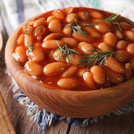

Kuru Fasulye

Sofralarımızın vazgeçilmez yemeği, yüksek lifli yapısı ve protein içeriğinden dolayı besin değeri oldukça yüksek olan kuru fasulye, Türk insanının hayır diyemeyeceği birkaç lezzetten biri. Bu efsane yemeğin yapımı ve pişirirken dikkat edilmesi gereken püf noktaları son günlerde merak konusu oldu
Malzemeler
- 2 adet iri kuru soğan
- 2 yemek kaşığı domates salçası
- fasulye
- 2 yemek kaşığı tereyağı
- 500 gr. kemikli ya da kemiksiz kuzu eti
- 1 tatlı kaşığı tuz
Pişirme Önerisi
- İlk olarak kuru fasulyeyi akşamdan suya koyun. Ertesi gün yıkayıp ve süzüp bir kenarda bekletin.
- Bol suyla haşlamaya başlayın. Kaynama sırasında fasulyenin gazı, köpük köpük olduğunda, o köpükleri mutlaka bir kevgir yardımıyla alın ve suyunu tekrardan süzün.
- Bu sırada başka bir tencerede yağı eritmeye başlayın. Tencerenin içine kuru soğanı doğrayın, etleri ilave edin ve suyu çekene kadar kavurun.